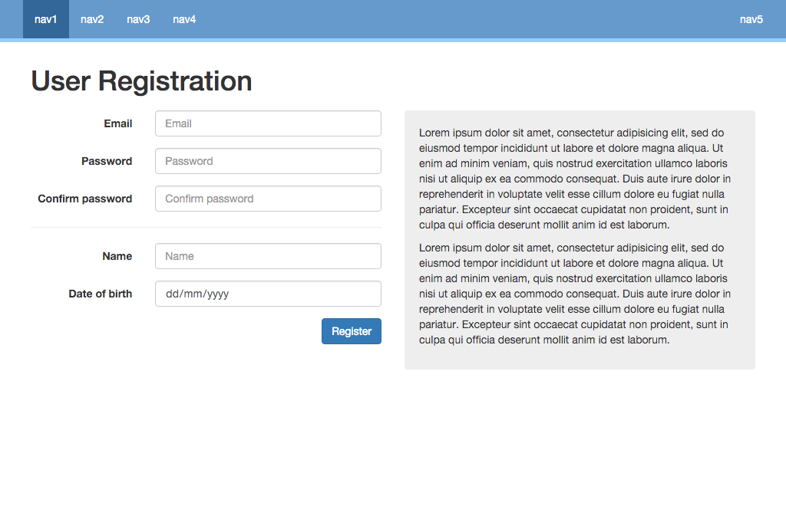

Please be aware that we are using the code you create in this test to assess your experience and technical ability. The less code you write in place of configuration, the less able we are to fairly assess you, therefore please do not use large configuration-heavy web frameworks like Django, Ruby on Rails, or Symfony. Microframeworks such as Flask, Sinatra, Slim, or Flight, however, are fine.
Please create a simple web application that serves the example web page shown below in valid semantic HTML and CSS, in accordance with web standards.
The page should:
Please ensure your repository includes all files to allow us to replicate and configure your environment ourselves.
You are free to use the server-side language of your choice, and any frameworks (see above), libraries or tools you feel are necessary to build this application that will demonstrate your experience and abilities. You are also free to design the user-journeys for validation however you choose.
These requirements are ambiguous on purpose and should be considered the same as an initial set of requirements. Feel free to use your knowledge and experience to improve or correct any issues you feel users might face.
You have 2 days in which to complete this task and will have been provided a deadline at the point of receiving these files as to when you must return your code by.
Please submit your code either by emailing back a zipped code repository, or by giving us a link to a public GitHub or BitBucket repository.
Please also include comments in the code laying out your method, why you made particular choices, how you might improve things given more time, and your overall thought processes throughout.
A working public example is welcome but not required.
